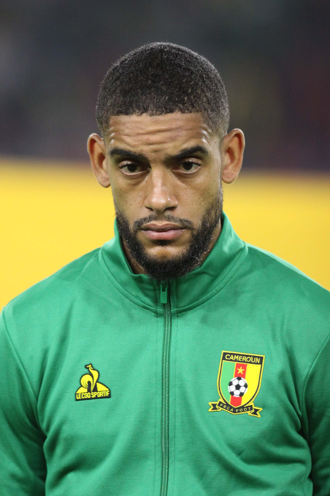
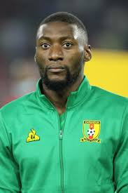
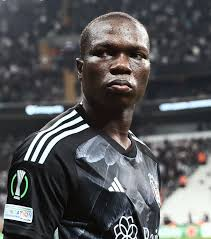

| André Onana |
Portero |
29 |
André Onana (Nkol Ngok, 2 de abril de 1996) es un portero camerunés que juega en el Manchester United. |
 |
| Jean-Charles Castelletto |
Defensa central |
30 |
Jean-Charles Castelletto (Clamart, Francia, 26 de enero de 1995) es un defensor camerunés que juega en el Nantes. |
 |
| André-Frank Zambo Anguissa |
Mediocampista |
29 |
Zambo Anguissa (Yaoundé, 16 de noviembre de 1995) es un mediocampista camerunés que juega en el Napoli. |
 |
| Martin Hongla |
Mediocampista |
27 |
Martin Hongla (Yaoundé, 16 de marzo de 1997) es un mediocampista camerunés que juega en el Granada. |
 |
| Karl Toko Ekambi |
Delantero |
33 |
Karl Toko Ekambi (París, Francia, 14 de septiembre de 1992) es un delantero camerunés que juega en el Abha Club. |
 |
| Vincent Aboubakar |
Delantero |
33 |
Vincent Aboubakar (Garoua, 22 de enero de 1992) es un delantero camerunés que juega en el Beşiktaş de Turquía. |
 |